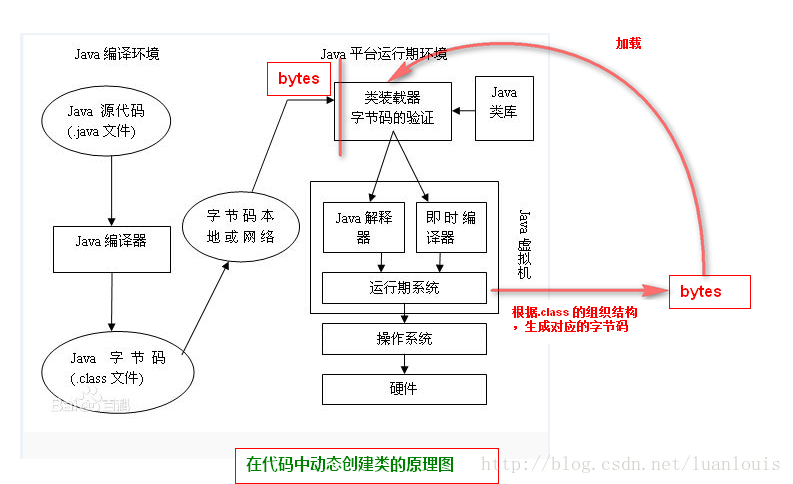

动态编程指的是在运行时动态修改代码逻辑。
java运行原理
java的运行机制是开发工程师编写java源代码通过javac（java编译器）生产class文件，然后在通过java类加载器装载到jvm（java虚拟机）中，解析Class文件内的信息，生产对应的Class对象。
class字节码文件是根据jvm虚拟机规范中规定的字节码组织规则生产。

由于jvm通过字节码的二进制信息加载类，那么，如果我们在运行期系统中，遵循java编译系统组织.class文件的格式和结构，生产相应的二进制数据，然后在吧这个二进制数据加载转换成对应的类，这样，就完成了在代码中，动态创建、修改一个类的能力了。

动态修改字节码
能实现java动态编程的框架有三种分别是 asm、cglib、javassist
asm性能最佳、技术难度大
cglib是对asm的封装,技术难度低
Javassist 性能弱于asm、技术难度低
asm
cglib
javassist
1
2
3
4
5
6
7
8
9
10
11
12
13
14
15
16
17
18
19
20
21
22
23
24
25
26
27
28
29
30
31
32
33
34
35
36
37
38
39
40
41
42
43
44
45
46
47
48
|
package com.dynamic.demo;
public class Demo {
}
}
package com.dynamic.demo.supers;
public class DemoSuper {
public void sysHello(){
System.out.println("hello world");
}
}
package com.dynamic.test;
import java.lang.reflect.Method;
import com.dynamic.demo.Demo;
import javassist.ClassPool;
import javassist.CtClass;
import javassist.CtMethod;
import javassist.CtNewMethod;
public class JavassistTest {
* @param args
* @throws Exception
*/
public static void main(String[] args) throws Exception {
ClassPool pool = ClassPool.getDefault();
CtClass cc = pool.get("com.dynamic.demo.Demo");
cc.setSuperclass(pool.get("com.dynamic.demo.supers.DemoSuper"));
CtMethod mthd = CtNewMethod.make("public void sysHello() { }", cc);
cc.addMethod(mthd);
CtMethod m = cc.getDeclaredMethod("sysHello");
m.insertBefore("{ super.sysHello(); }");
cc.writeFile();
Class c = cc.toClass();
Method method = c.getMethod("sysHello", null);
method.invoke(c.newInstance(), null);
Demo e = new Demo();
Class cl = Class.forName("com.dynamic.demo.Demo");
Method mm = cl.getMethod("sysHello", null);
mm.invoke(e, null);
}
}
|
最后控制台打印结果分别是